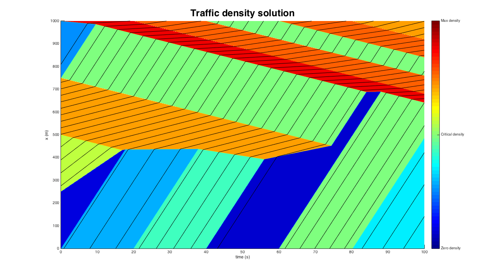

An example for solving a single link using the Berkeley toolbox
Contents
Configure the initial and boundary conditions
time_grid = [0, 20, 40, 60, 80, 100]; q_in = [0.8,1.2,0.2,1.4,1.0]; q_out = [0.3,0.6,1.4,0.6,0.8]; ini_seg = [0,250,500,750,1000]; p_ini = [0.01,0.1,0.2,0.03];
Configure the fundamental diagram parameters
All units are in m, s, m/s, veh/m.
vf = 24.6; w = -4; km = 0.4053; kc = 0.0567; % Set the position of the link in meters. us_position = 0; ds_position = 1000; % Set the resolution for the solution in meters and seconds. dx_res = 1; dt_res = 0.1;
Compute the solution
% Set the fundamental diagram as a LH_Tfd class fd = LH_Tfd(vf,w,km); pbEnv = LH_general(fd,us_position,ds_position); % Set initial and boudnary conditions pbEnv.setIniDens(ini_seg,p_ini); pbEnv.setUsFlows(time_grid,q_in); pbEnv.setDsFlows(time_grid,q_out); % Generate a mesh grid for computing the solutions. x_mesh_m = 0:dx_res:ds_position; t_mesh_s = 0:dt_res:100; xValues = ones(size(t_mesh_s'))*(x_mesh_m); tValues = t_mesh_s' * ones(size(x_mesh_m)); % Compute the explicit solutions result = pbEnv.explSol(tValues,xValues); N = result{1}; % the vehicle ID solution activeComp = result{2}; k = pbEnv.density(tValues,xValues,activeComp); % the density solution
Visualization
Transformation for better color presentation: kc => 0.5km, km => km
k_c_tmp = kc; k_m_tmp = km; k_trans = mapping(k, [0 k_c_tmp; k_c_tmp k_m_tmp],... [0 0.5*k_m_tmp; 0.5*k_m_tmp k_m_tmp]); % Plot the solution scrsz = get(0,'ScreenSize'); figure('Position',[1 1 scrsz(3) scrsz(4)]); title(sprintf('Traffic density solution'),'fontsize',24); colormap jet [~, ~] = LH_plot2D(t_mesh_s, x_mesh_m, N, k_trans, fd); % Another way of visualizing the solution % scrsz = get(0,'ScreenSize'); % figure('Position',[1 1 scrsz(3) scrsz(4)]); % image(flipud(k_trans'),'CDataMapping','scaled') % colormap jet